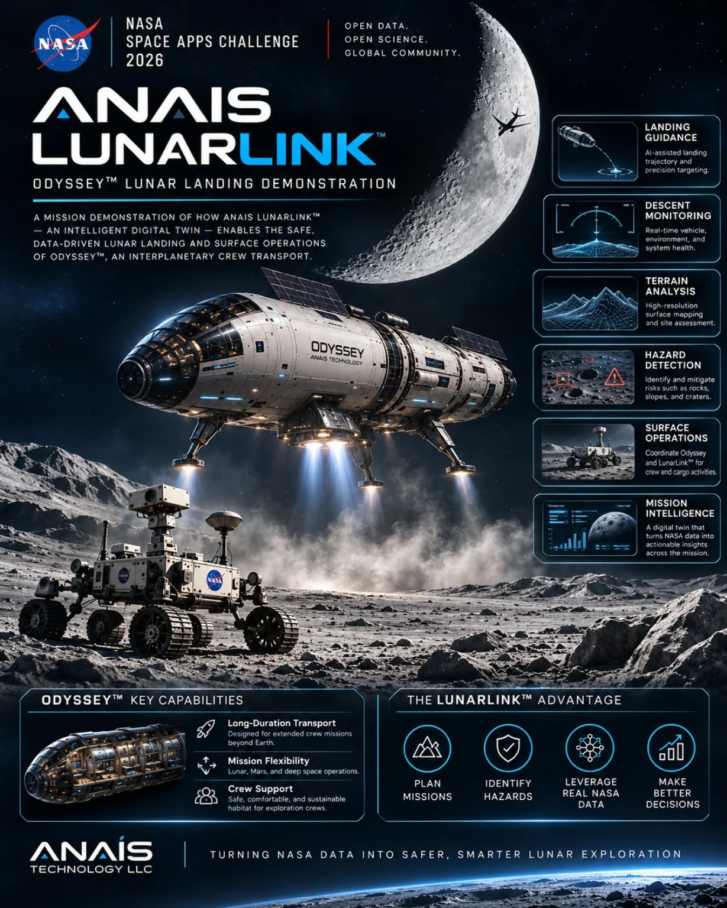
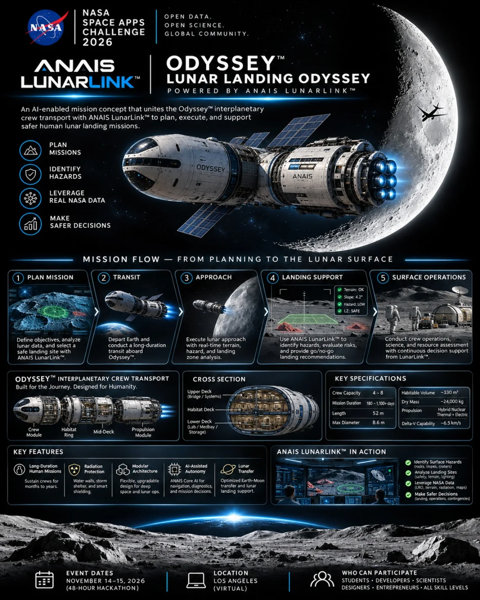
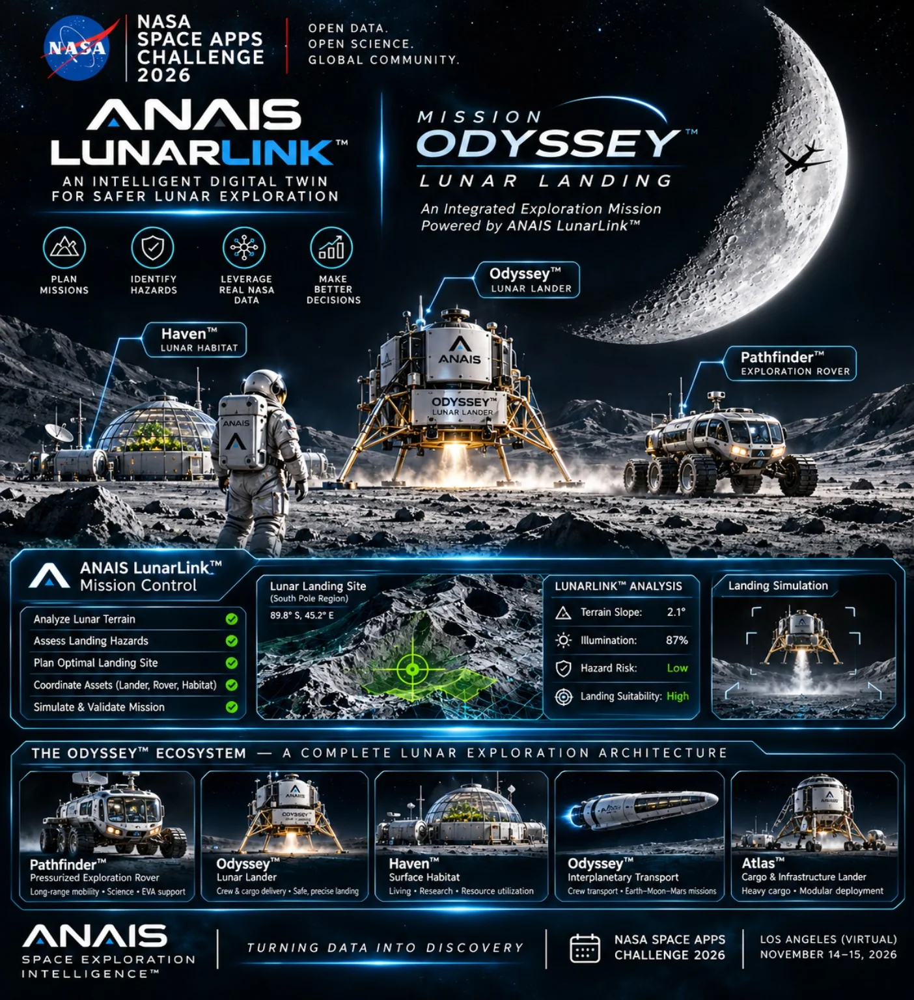
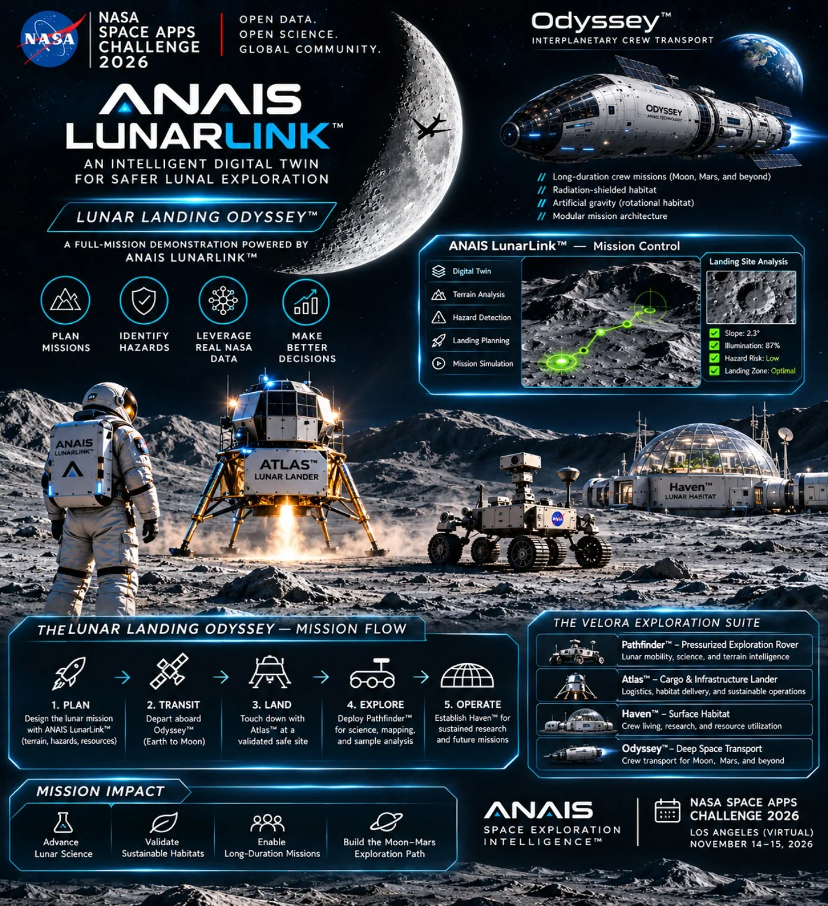
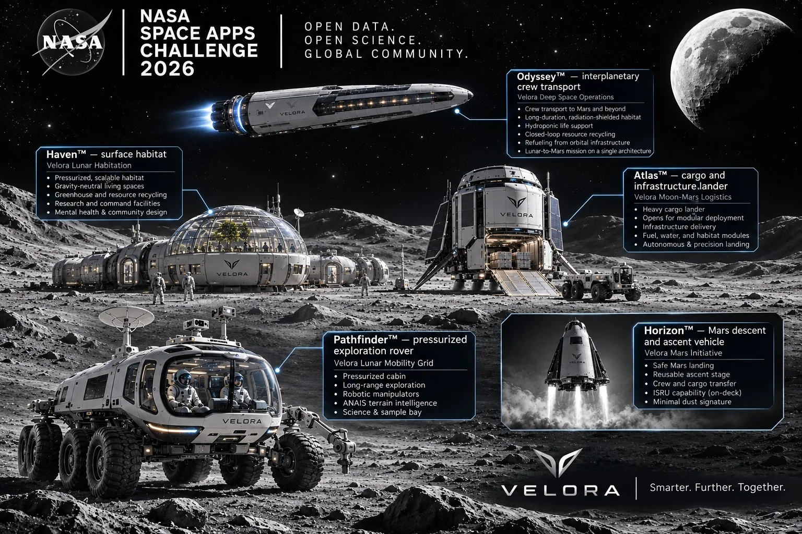
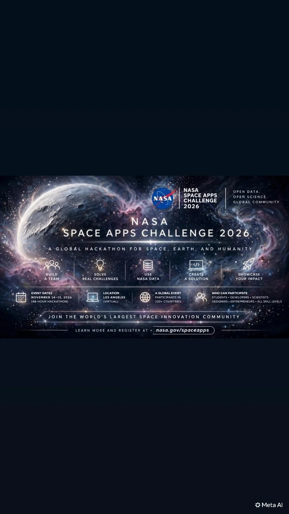

Navigation Awareness
Visualize estimated position, altitude, velocity, route progress, and approach constraints.
01 / NAVAn intelligent digital twin concept for safer lunar exploration. Plan missions, identify hazards, visualize landing decisions, and explore the Odyssey™ ecosystem.
Interactive proof-of-concept · Synthetic telemetry · Not flight-qualified
Lunar missions must reason across terrain, vehicle state, communications windows, and incomplete sensor information. LunarLink explores how these signals could be integrated into a transparent advisory interface that keeps mission operators in control.
Visualize estimated position, altitude, velocity, route progress, and approach constraints.
01 / NAVExplore hazard alerts and candidate touchdown conditions using illustrative terrain-risk inputs.
02 / TERRAINModel communications state and show how a relay service could affect operator awareness.
03 / COMMSPresent AI recommendations as advisory information, not autonomous final landing clearance.
04 / CONTROLRun a simplified simulated descent and inspect the changing mission state.
Mission ready. Start the simulation to begin a conceptual descent.
This module executes a transparent JavaScript scoring algorithm in your browser. Choose a candidate, adjust four inputs, and see how the score and ranked alternatives change immediately. It is an independent demonstrator, not a verified connection to the LunarNav repository.
Technical disclosure: This executable scoring model was authored for the website demonstration. The four values are manually editable synthetic scenarios—not NASA observations, surveyed lunar sites, LunarNav outputs, operational communications predictions, or flight safety determinations. Results and exports are reproducible under the documented formula, not validated for lunar landings.
The concept organizes vehicle telemetry, environmental context, and relay status into one decision-support view. Its future technical design should evaluate LunaNet interoperability and published interface standards rather than claim certification or existing network integration.
A visual tour of our proposed lunar landing workflow and exploration ecosystem. These are concept illustrations and promotional media, not evidence of fabricated or flight-tested spacecraft.






A useful submission should let reviewers distinguish the demonstrated interface from the underlying implementation and documented tests.
Review the project source, version history, and future implementation work.
OPEN GITHUB ↗Inspect workflow runs and their actual pass/fail state. Workflow execution is not equivalent to flight validation.
VIEW ACTIONS ↗Open the previously shared project commit as a traceable development reference.
VIEW COMMIT ↗